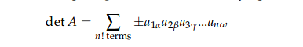
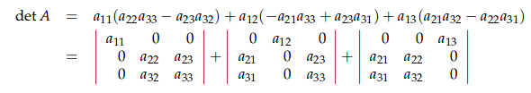
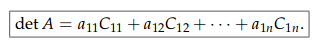
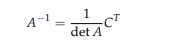
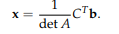
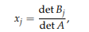
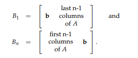

本周完成了Gilbert Strang线性代数的中行列式的学习，课程中的Lesson18~Lesson20.
笔记都是用课程中手记的，这里只做一个简单的记录。
determinants
det I = 1
交换2行的位置，符合改变。
在每一个行上，都是线性的。
A中存在2个相同的行，det A = 0
substract c*row(i) from row(j), and the det does not change
A: Row of zeros, det A = 0
U: 上三角矩阵，d1,d2…dn为主元素， det U = d1 d2 .. dn
这个说明可以通过消元法来求解行列式，而且Gilbert老师说，是matlib等求det的主要方法。A: singular, det A = 0
det(AB) = detA detB
det2A = 2^n det A
其实看到这里的时候，Gilbert老师就提到过，这种样子像是求体积，自然而然就意识到det其实就是矩阵的体积，不过带有方向。det A transpose = det A
Big formula

cofactor


原矩阵与逆矩阵
formular for A^(-1)

Cramer’s Rule



这个Cramer法则好看不中用
Volumn
这个很有趣，是对行列式终极含义
|det A| is equal to the volumn of matrix